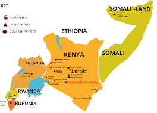

Mount Kenya University boasts a wide network of campuses strategically located to provide accessible and quality education to a diverse student body. Each campus offers unique facilities, a conducive learning environment, and a vibrant student life.
Whether you prefer the bustling city environment or a more serene setting, MKU has a campus that fits your needs. Our campuses are equipped with modern lecture halls, well-stocked libraries, computer labs, student hostels, and recreational facilities.

Discover the MKU campus nearest to you or the one that offers the programs you are interested in.
Our flagship campus, located in Thika, offers the widest range of programs, state-of-the-art facilities, and a dynamic student experience. It's the administrative and academic hub of MKU.
Situated in the heart of Kenya's capital, the Nairobi campus provides accessible learning for working professionals and those seeking an urban university experience.
Serving the coastal region, our Mombasa campus offers various programs with a focus on tourism, hospitality, and maritime studies, alongside other disciplines.
The Nakuru campus is a significant regional hub, providing quality education to students from the Rift Valley and beyond, with excellent facilities for various programs.
Catering to the Western Kenya region, Eldoret campus offers a comprehensive learning environment, fostering academic growth and community engagement.
Our campus in Kigali extends MKU's academic excellence beyond Kenya's borders, providing quality education in the heart of East Africa.
For a complete list of all our campuses and distance learning centers, please visit the official MKU website.
Access to extensive physical and e-libraries with vast collections of academic resources.
Well-equipped computer labs, science labs, and specialized workshops for hands-on learning.
Facilities for various sports, indoor games, and student clubs to foster holistic development.
Comfortable and secure on-campus or affiliated off-campus accommodation options.
On-site clinics and counseling services to support student well-being.
Reliable Wi-Fi internet access across all campuses to support research and communication.